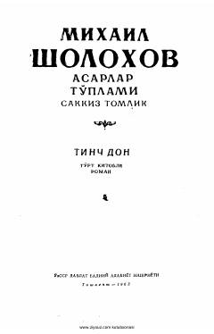

TDDon kazaklarining 1919-yildagi qo'zg'oloni va fuqarolar urushi davridagi fojiali voqealar tasviri.
Mixail Sholoxovning ushbu mashhur romanining to'rtinchi qismida 1919-yildagi Don kazaklarining qo'zg'oloni va fuqarolar urushi davridagi murakkab siyosiy vaziyat tasvirlanadi. Asarda oq gvardiyachilar ta'siriga tushib qolgan kazaklarning fojiali taqdiri va tarixiy voqealar yuksak badiiy mahorat bilan yoritilgan.